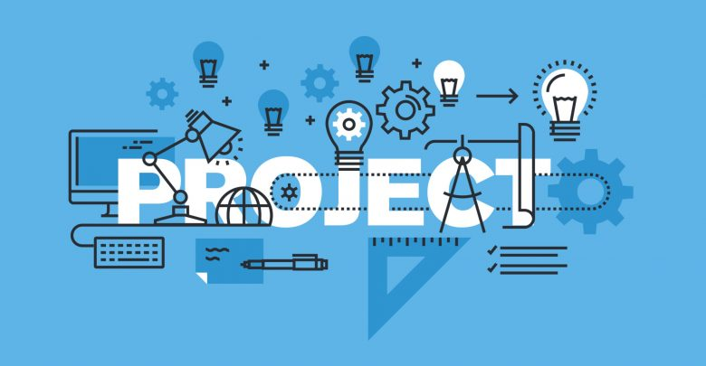

ریشهی مدیریت پروژه به روشها و فرآیندهایی برمیگردد که حدود صد سال پیش در کسب وکار توسعه پیدا کردند. با این حال، در سالهای اخیر، مدیریت پروژه رشد چشمگیری داشته و به عنوان یک عملیات مجزا و جدی در تجارت ظهور کرده است و در صحنه تجارت جهانی، یعنی جایی که شرکتها دائما به دنبال رسیدن به مزیت رقابتی هستند، به یک عامل کلیدی تبدیل شده است. در مقاله زیر با مفهوم مدیریت پروژه بیشتر آشنا خواهید شد. مدیران پروژه برخلاف مدیران تجاریِ شرکت، خود را فقط محدود به نظارت بر یک جنبه از عملیات نمیکنند، همچنین برای رسیدگی و مقابله با مسائل مدیریتی محدودیت زمانی هم ندارند. در عوض، مدیران پروژه وظیفهی پیچیدهای برعهده دارند: آنها باید تمامی جنبه های پروژه را بررسی کرده و از اجرای درست و به موقع آنها، در محدودهی بودجهای که برایشان تعیین شده، اطمینان حاصل کنند. برای موفقیت در این کار، مدیران پروژه باید مهارتهای خاصی کسب کنند و مجوزهایی بگیرند که صلاحیتشان را در انجام این شغلِ سخت تأیید کنند. آنها همچنین باید ذهنی تحلیلگر داشته باشند و بتوانند به خوبی با دیگران ارتباط برقرار کنند. برای افرادی که از پس سختیها و پیچیدگیهای این کار به خوبی بربیایند، مدیریت پروژه میتواند شغل لذتبخشی باشد.
مدیر پروژه فردی است که پروژه را بررسی میکند تا از انجام درست آن در محدودهی زمانی و مالیِ موجود اطمینان حاصل کند. البته، کاملا مشخص است که در سازمانهای بزرگ، این کارِ سادهای نیست و نیازمند مشارکت افراد زیادی است. یکی از اولین وظایف مدیر پروژه این است که هدف پروژه را تعیین کند، به بیان دیگر، با جزئیات شرح دهد که پروژه قرار است به چه چیزی دست پیدا کند. در مرحلهی بعد، مدیر پروژه باید یک برنامهی زمانی آماده کرده، وظایف هر کدام از اعضای گروه را مشخص و برای هر وظیفهی خاص، فرجهی زمانی تعیین کند. مدیر پروژه در کنار برنامهی زمانی، باید بودجه را هم تعیین کند. بودجه باید به گونهای مشخص شود که بدون اسراف و ولخرجی، بتواند هزینههای غیرقابل پیشبینی را نیز پوشش دهد. بعد از اینکه پروژه آغاز شد، مدیر پروژه باید مطمئن شود که همهی اعضای گروه، منابعی که برای رسیدن به اهدافشان مورد نیاز است، در اختیار دارند.